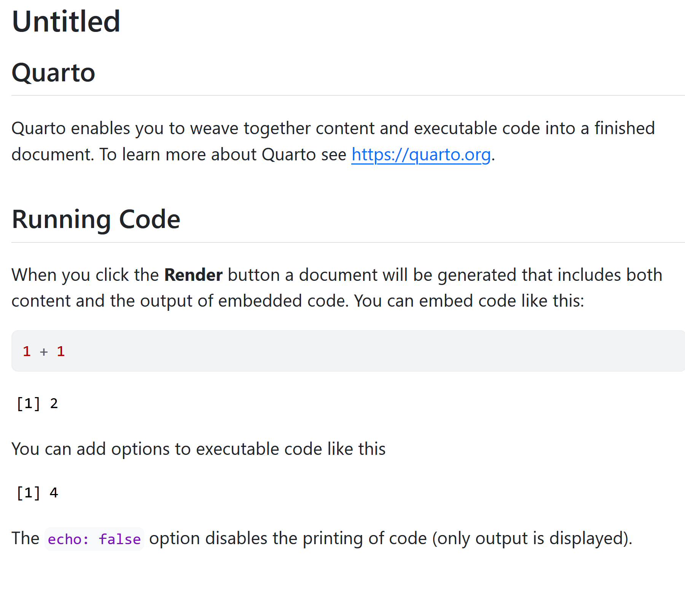

library(tidyverse)
library(here)
library(rio)7 Communicating Research with Quarto
7.1 Introduction
Quarto provides a unified authoring framework for data science, combining your code, its results, and your prose. Quarto documents are fully reproducible and support dozens of output formats, like PDFs, Word files, presentations, and more.

Quarto files are designed to be used in three ways:
- For communicating to decision-makers, who want to focus on the conclusions, not the code behind the analysis.
- For collaborating with other data scientists (including future you!), who are interested in both your conclusions, and how you reached them (i.e. the code).
- As an environment in which to do data science, as a modern-day lab notebook where you can capture not only what you did, but also what you were thinking.
Quarto is a command line interface tool, not an R package. This means that help is, by-and-large, not available through ?. Instead, as you work through this chapter, and use Quarto in the future, you should refer to the Quarto documentation (https://quarto.org/).

Note
Quarto documents are fully reproducible and support dozens of output formats, like PDFs, Word files, slideshows, and more.
Need some help?
Download Quarto: https://quarto.org/docs/get-started/
Quarto Guide: https://quarto.org/docs/guide/
Markdown Reference Sheet: Help > Markdown Quick Reference
You’ll need the Quarto Command Line Interface but it is automatically done by RStudio for you.
Let us create one from RStudio now.
To create a new Quarto document (.qmd), select File -> New File -> Quarto Document in RStudio, then choose the file type you want to create. For now we will focus on a .html Document, which can be easily converted to other file types later.
Go ahead and give a title.
The newly created .qmd file comes with basic instructions, let us go through it now.
It contains three important types of content:
- An (optional) YAML header surrounded by
--- - Chunks of R code surrounded by
``` - Text mixed with formatting like
##headings and simple text.
YAML stands for yet another markup language or YAML ain’t markup language (a recursive acronym), which emphasizes that YAML is for data, not documents.
In any case, it holds the metadata of the document and can be really helpful.
7.2 How does Quarto work?
When you render a Quarto document, first knitr executes all of the code chunks and creates a new markdown (.md) document, which includes the code and its output. The markdown file generated is then processed by pandoc, which creates the finished format. The Render button encapsulates these actions and executes them in the right order for you.

7.3 Some Basics of the Markdown syntax
Learn more about Markdown from the Guide: https://quarto.org/docs/authoring/markdown-basics.html
When you open an .qmd, you get a notebook interface where code and output are interleaved. You can run each code chunk by clicking the Run icon (it looks like a play button at the top of the chunk), or by pressing Ctrl + Shift + Enter.
RStudio executes the code and displays the results inline with the code by default. However, you can change it to display in the console instead by clicking on the gear icon and changing the Chunk Output in Console option.


You can render the entire document with a single click of a button.
Go ahead and give it a try. RStudio might prompt you to save the document first, save it in your working directory by giving it a suitable title.
You should now see some output like this:

7.4 Code Chunks
The knitr package extends the basic markdown syntax to include chunks of executable R code.
When you render the report, knitr will run the code and add the results to the output file. You can have the output display just the code, just the results, or both.
To embed a chunk of R code into your report, surround the code with two lines that each contain three back ticks. After the first set of backticks, include {r}, which alerts knitr that you have included a chunk of R code. The result will look like this:

To omit the results from your final report (and not run the code) add the argument eval = FALSE inside the brackets and after r. This will place a copy of your code into the report.

To omit the code from the final report (while including the results) add the argument echo = FALSE. This is very handy for adding plots to a report, since you usually do not want to see the code that generates the plot.
Read more about R Code Chunks at https://rmarkdown.rstudio.com/articles_intro.html. You can also change this from the gear icon on the right of the code chunk
7.4.1 Inline R Code
You can also evaluate R expressions inline by enclosing the expression within a single back-tick qualified with r.
knitr will replace the inline code with its result in your final document (inline code is always replaced by its result). The result will appear as if it were part of the original text. For example, the snippet above will appear like this:


Now let us try building our own .qmd document and add our own analysis. Let us use a new dataset for this purpose. So go ahead and delete everything below the YAML header.
The data we are going to use today is the data of deaths due to COVID-19 in Kerala state. This information is available from the Government of Kerala COVID-19 Dashboard https://dashboard.kerala.gov.in/covid/
Lets begin!
7.4.2 Workflow with Quarto
Create a new project and open a new
.qmdfile in the project.Load Packages
- Load the Data
mortality_df <- rio::import(
here( "data",
"GoK Dashboard Official Kerala COVID-19 Statistics.xlsx"),
skip = 1)- Check the dimensions of the data
mortality_df |> dim()[1] 21820 9- You can alternatively use
nrow()andncol().
mortality_df |> nrow()[1] 21820mortality_df |> ncol()[1] 9- Now try to use them in the R inline code.
Hint: Use
`r `for inline code chunk like we discussed earlier. Inline R code chunks can be very useful when you are working with data.
Text in Quarto:
There are 21820 rows in the data
and 9 columns.Output:
There are 21820 rows in the data and 9 columns.
- Check the variable names and clean them
A good practice is to first check all the variable names and clean them using the clean_names() function from the janitor package
mortality_df |> names()[1] "SL No." "Date Reported"
[3] "District" "Name"
[5] "Place" "Age"
[7] "Sex" "Date of death"
[9] "History(Traveler / contact)"Look at the difference in the names() of the dataset once it has been cleaned by janitor
mortality_df |> janitor::clean_names() |> names()[1] "sl_no" "date_reported"
[3] "district" "name"
[5] "place" "age"
[7] "sex" "date_of_death"
[9] "history_traveler_contact"skimr::skim(mortality_df)The skim() function shows that date_reported, date_death, and sex are character variables which might not be ideal. Let us transform them into the data types date and factor. also that history_traveler_contact are mostly NA.
Let us drop the column history_traveler_contact, name and place from our analysis
mortality_df <- mortality_df |>
select(-c(history_traveler_contact, name, place))Lets check the class of date_reported.
mortality_df |> pull(date_reported) |> class()[1] "character"Lets do some more cleaning of the variables
When working with dates, the lubridate package is ideal.
library(lubridate)
mortality_df <- mortality_df |>
mutate(date_reported = lubridate::dmy(date_reported))Lets check the class of date_reported now
mortality_df |>
pull(date_reported) |>
class()[1] "Date"pull() is an excellent funtion that lets you pull a single varible from a dataset and perform operations. Read more about pull() in the Help menu.
Let us now look at the sex variable.
mortality_df |>
pull(sex) |>
unique()[1] "Male" "Female" "Others" "-" "gf" "male" NA After some mutate() magic…
mortality_df |>
mutate(sex = fct_collapse(sex, Male = "male")) |>
pull(sex) |>
unique()[1] Male Female Others - gf <NA>
Levels: - Female gf Male OthersWe can pipe multiple mutate() functions too..
mortality_df <- mortality_df |>
mutate(date_of_death = lubridate::dmy(date_of_death)) |>
mutate(sex = fct_collapse(sex, Male = "male")) |>
mutate(sex = factor(sex, levels = c("Male", "Female")))Warning: There was 1 warning in `mutate()`.
ℹ In argument: `date_of_death = lubridate::dmy(date_of_death)`.
Caused by warning:
! 47 failed to parse.Let us drop_na() for now
mortality_df <- mortality_df |> drop_na()Let us look at the number of rows now
mortality_df |> nrow()[1] 21609Let us look at the Districts
mortality_df |> pull(district) |> unique() [1] "Thiruvananthapuram" "Kollam" "Pathanamthitta"
[4] "Kottayam" "Idukki" "Ernakulam"
[7] "Thrissur" "Palakkad" "Malappuram"
[10] "Kozhikode" "Wayanad" "Kasaragod"
[13] "Alappuzha" "Kannur" "Thiruvananthapura m"
[16] "THIRUVANANTHAPURAM" "KOLLAM" "PATHANAMTHITTA"
[19] "ALAPPUZHA" "KOTTAYAM" "IDUKKI"
[22] "ERNAKULAM" "THRISSUR" "PALAKKAD"
[25] "MALAPPURAM" "KOZHIKODE" "WAYANAD"
[28] "KANNUR" "KASARAGOD" "Kasargod"
[31] "Thiruvananthapuram?K" "Alappuzha?Kannur" "Kollam?Thiruvanantha"
[34] "Malappuaram" "Kozhikode?Thiruvanan" "Kozhikode?Ernakulam"
[37] "Eranakulam" Let us clean it
mortality_df <- mortality_df |>
mutate(district = str_to_sentence(district)) |>
mutate(district = fct_collapse(district,
Thiruvananthapuram = c(
"Thiruvananthapura m",
"Thiruvananthapuram?K"))) |>
mutate(district = fct_collapse(district,
Kollam = c(
"Kollam?Thiruvanantha"))) |>
mutate(district = fct_collapse(district,
Ernakulam = c(
"Eranakulam"))) |>
mutate(district = fct_collapse(district,
Kasaragod = c(
"Kasargod"))) |>
mutate(district = fct_collapse(district,
Kozhikode = c(
"Kozhikode?Ernakulam",
"Kozhikode?Thiruvanan"))) |>
mutate(district = fct_collapse(district,
Alappuzha = c(
"Alappuzha?Kannur"))) |>
mutate(district = fct_collapse(district,
Malappuram = c(
"Malappuaram"))) Let us look at the number of Districts now
mortality_df |> pull(district) |> unique() |> length()[1] 14Let us now create a new variable called wave. This will tell us if the death has happened in the first wave or second wave of COVID-19.
For the workshop’s sake, let us consider April, 2021 as the cut off date for the first wave and second waves of COVID-19 in Kerala.
mortality_df <- mortality_df |>
mutate(wave = if_else(date_of_death <= "2021-04-01",
"First Wave",
"Second Wave")) Let us create age_group variable
mortality_df <- mortality_df |> mutate(age_group = case_when(
age < 60 ~ "<60 Years", TRUE ~ ">60 Years"))Distribution of Age and Gender
Lets look at the distribution age and sex among COVID-19 deaths in Kerala
mortality_df |> pull(age) |> summary() Min. 1st Qu. Median Mean 3rd Qu. Max.
0 59 68 67 76 121 mortality_df |> pull(sex) |> factor() |> summary() Male Female
12777 8832 mortality_df |> group_by(sex) |> summarize(mean(age), sd(age))# A tibble: 2 × 3
sex `mean(age)` `sd(age)`
<fct> <dbl> <dbl>
1 Male 66.3 13.6
2 Female 68.0 14.2Using gtsummary
library(gtsummary)
age_sex_table <- mortality_df |>
dplyr::select(age, sex) |>
tbl_summary(by = sex) |>
add_p()
# using the {gt} package
as_gt(age_sex_table) |> gt::as_latex()Using the inline R code you can:
The median (IQR) age (in years) among males and females are
` r inline_text(age_sex_table, variable = age,
column = "stat_1")`
and ` r inline_text(age_sex_table,
variable = age, column = "stat_2")`, respectively.Output:
The median (IQR) age (in years) among males and females are 68 (58, 75) and 70 (60, 78) , respectively.
Visualize using ggplot2
mortality_df |>
ggplot(aes(x = sex, y = age)) +
geom_boxplot()Distribution of Age groups and Waves
age_group_wave_table <- mortality_df |>
dplyr::select(age_group, wave) |>
tbl_summary(by = wave) |>
add_p()
# using the {gt} package
as_gt(age_group_wave_table) |> gt::as_latex()Using the inline R code you can:
The number of deaths in the First wave and Second wave of COVID-19 are
` r inline_text(age_group_wave_table, variable = age_group,
level = "<60 Years", column = "stat_1")` and
` r inline_text(age_group_wave_table, variable = age_group,
level = ">60 Years", column = "stat_2")` , respectively.Output:
The number of deaths in the First wave and Second wave of COVID-19 are 1,079 (24%) and 12,467 (73%) , respectively.
Visualize using ggplot2
mortality_df |>
ggplot(aes(x = wave, fill = age_group)) +
geom_bar(position = "dodge")Lets make more sense from this plot with some mutate() magic again..
df <- mortality_df |>
count(wave, age_group) |>
na.omit() |>
group_by(wave) |>
mutate(prop = (n / sum(n))*100) |>
ungroup()df |>
ggplot(aes(x = wave, y = prop, fill = age_group)) +
geom_bar(position = "dodge", stat = "identity")Now let us knit this!
7.5 Conclusion
- Quarto is awesome.
- The ratio of markup to content is excellent.
- For exploratory analyses, blog posts, and interactive documents
- For journal articles, though knowledge on will be helpful.
- The RStudio team have made the whole process very user friendly.
- RStudio provides useful short cut keys for compiling to HTML, and running code chunks.
- These shortcut keys are presented in a clear way.
- Code completion on R code chunk options is really helpful. See also chunk options documentation on the knitr website.